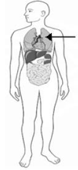

Оставащо време: 10:00
В кой ред изброените вещества се разтварят във вода?
В коя група всички организми обитават една и съща среда на живот?
Към коя група растения принадлежи ягодата?
За коя група животни се отнася описанието:
"Тялото им е покрито със суха кожа или с люспи. Размножават се, като снасят яйца на сушата.
Не се грижат за малките си."
Смяната на деня с нощта се дължи на движението на:
Кой от изброените жизнени процеси осигурява енергия на организмите?
Кой етап от живота на човека се свързва с полово съзряване, усилен растеж и развитие на всички органи?
Коя дейност води до замърсяване на природата?
Под действието на слънчевата топлина водата в локвите, образувани след дъжд:
Каква дейност извършва посоченият на схемата орган?
| Въпрос | Отговор |
|---|---|
| 1 | б) |
| 2 | а) |
| 3 | а) |
| 4 | в) |
| 5 | б) |
| 6 | в) |
| 7 | в) |
| 8 | в) |
| 9 | а) |
| 10 | в) |